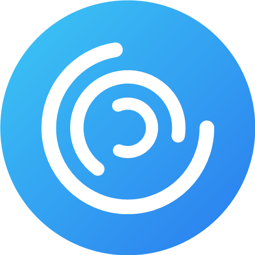

Личные чаты, группы и каналы, голосовые сообщения, аудио- и видеозвонки. Работает на Android и в браузере на любом устройстве.
Файл 35 МБ · Android 7 и новее
Ответы, пересылка, реакции, закреплённые сообщения, фото и файлы.
Голосовые сообщения, аудио- и видеозвонки один на один.
На Android о новых сообщениях сообщает push; любой чат можно заглушить.
Сквозное шифрование: текст и фото читают только двое, на сервере лежит шифр. Есть таймер удаления.
Версия 0.1.26: переработанный дизайн и анимации, опросы, отложенные сообщения, код-пароль на приложение.
Блокировка собеседника, жалобы и удаление аккаунта со всеми сообщениями — в один шаг.